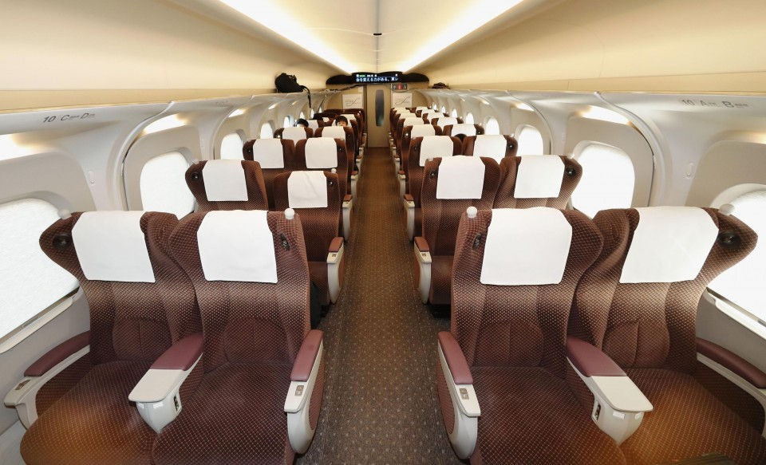
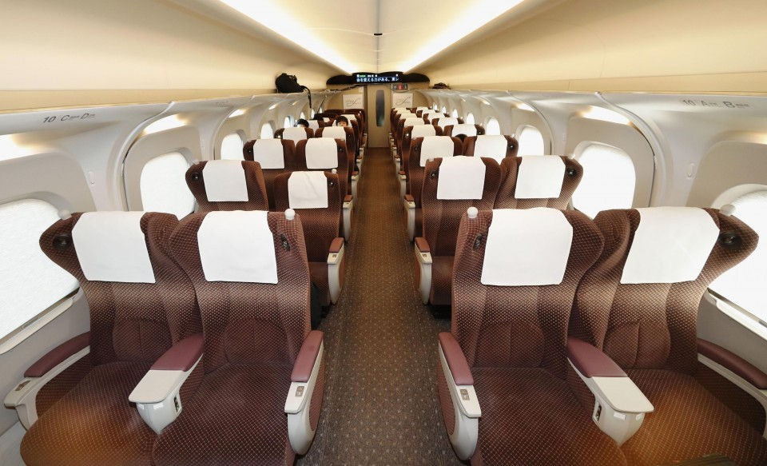

Shinkansen N700S
Най-новият високоскоростен влак в Япония, известен със своята безопасност и удобства за пътниците.
 

Преглед
Shinkansen N700S е последното поколение от известната японска серия високоскоростни влакове, отличаваща се с нови системи за безопасност и подобрено преживяване на пътниците. Този модел е изграден с мисъл за екологичност и висока ефективност.
Основни характеристики
- Скорост: Максимална скорост от 360 км/ч
- Енергийна ефективност: Намалена консумация на енергия с 7% спрямо предишни модели
- Безопасност: Оборудван с автоматични спирачки при земетресение
- Комфорт: Шумоизолирани купета и подобрени климатични системи
Технология
N700S използва усъвършенстван аеродинамичен дизайн и е оборудван с аварийни батерийни системи, което позволява на влака да продължи движението при прекъсване на електрозахранването. Технологията в него е насочена към безопасност и минимален екологичен отпечатък.
Услуги на борда
Пътниците на Shinkansen N700S се наслаждават на удобства като безжичен интернет, USB зарядни, просторни багажни отделения и качествени опции за храни и напитки. Влакът предлага различни класове на пътуване с уникални екстри.
Спецификации
| Скорост | 360 км/ч |
|---|---|
| Дължина | 16 автомобила (приблизително 400 метра) |
| Капацитет | 1,323 пасажери |
| Оператор | JR Central |